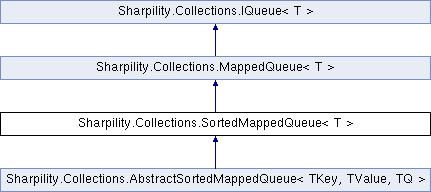

Sharpility
Main Page
Namespaces
Classes
Class List
Class Index
Class Hierarchy
Class Members
Sharpility.Collections.SortedMappedQueue< T > Interface Template Reference
Mapped queue with sorted elements.
More...
Inheritance diagram for Sharpility.Collections.SortedMappedQueue< T >:

List of all members.
Detailed Description
template<T>
interface Sharpility::Collections::SortedMappedQueue< T >
Mapped queue with sorted elements.
Template Parameters:
T
Type of queue element
The documentation for this interface was generated from the following file:
src/Sharpility/Collections/SortedMappedQueue.cs
All
Classes
Namespaces
Functions
Enumerations
Properties
Sharpility
Collections
SortedMappedQueue
Generated by
1.7.6.1
 1.7.6.1
1.7.6.1